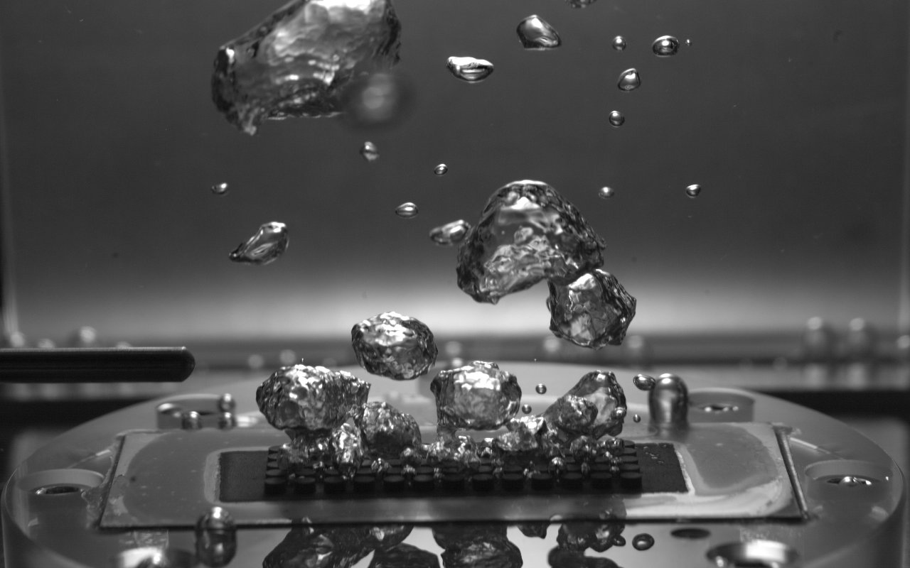
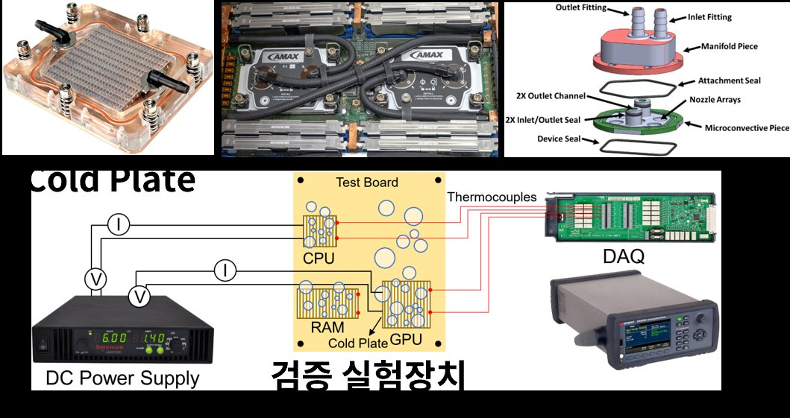
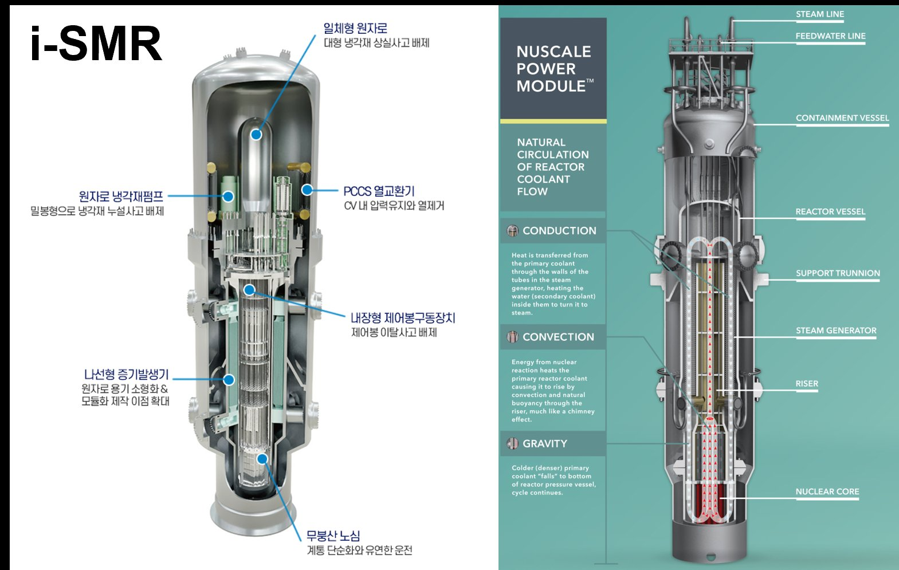
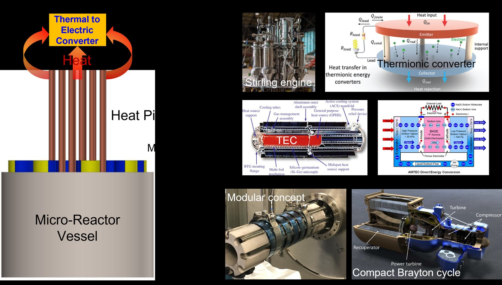
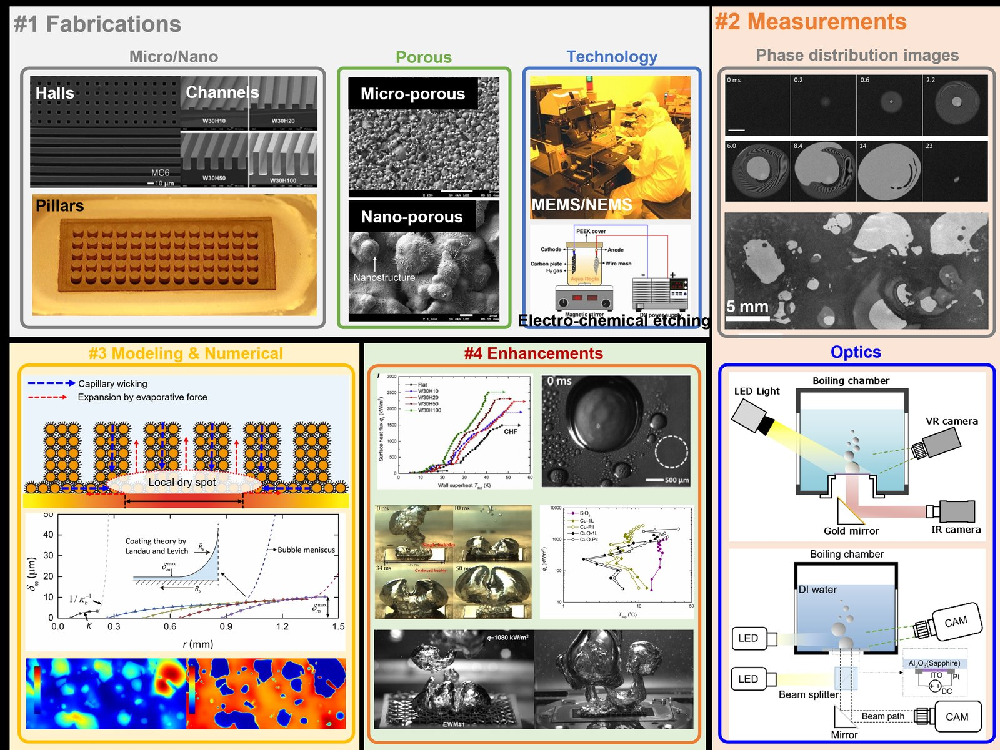

Research Activities
상변화 열전달의 기초 물리부터 원자력 안전계통·반도체 냉각 응용까지, 실험과 수치해석을 아우르는 연구를 수행합니다.
연구 주제

Phase-change Heat Transfer
Pool boiling 및 상 분포 가시화, 적외선 온도장 계측을 통한 비등 열전달 메커니즘 규명. 실험 데이터와 현상학적 수치해석을 상호 피드백하여 비등면의 상(phase) 및 온도장을 동시에 분석합니다.

Chip Cooling
Cold Plate 기반 CPU/GPU/RAM 냉각 검증 실험장치를 활용해 데이터센터·AI 가속기의 초고열유속 방열 성능을 정량 평가합니다.

SMR Technology
일체형 원자로, 자연순환 냉각재 유동, PCCS 열교환기 등 소형모듈원자로(SMR)의 피동안전계통 열수력 특성을 연구합니다.

Microreactor Technology
Heat pipe 기반 마이크로원자로 열전달 및 Stirling engine, Thermionic converter, AMTEC, Compact Brayton cycle 등 열-전기 변환 기술을 검토합니다.
연구 역량
Micro/Nano 가공부터 광학 계측, 수치 모델링까지 — 실험 설계·제작·계측·해석을 자체적으로 수행할 수 있는 역량을 보유하고 있습니다.
Micro/Nano · Porous · Technology
Micro-hall, channel, pillar 구조 가공, micro/nano-porous 표면 제작, MEMS/NEMS 및 전기화학 에칭(Electro-chemical etching) 공정.
Phase distribution & Optics
고속카메라 기반 상 분포 이미지 계측, LED/beam-splitter 광학계를 이용한 비등 챔버 가시화 시스템.
Capillary wicking · Local dry spot
모세관 흡입 및 증발력 기반 액막 모델링, Landau–Levich 코팅 이론 적용 수치해석.
Surface engineering
표면 구조(Flat, W30H10~W30H100) 별 임계열유속(CHF) 성능 비교 및 향상 기법 연구.
